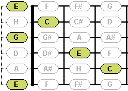

Die Griffbrett-Sicht zeigt eine stilisierte Darstellung des Griffbretts des aktuell aktiven Instruments. Die Darstellung des Griffbretts wurde hierbei bewusst stilisiert, um die Darstellung auf die wesentlichen Informationen zu beschränken.
Die Darstellung des Griffbretts ist dabei in einigen Punkten stark von der Definition des aktiven Instruments abhängig. Handelt es sich beispielsweise bei dem dargestellten Instrument um ein bundloses Instrument (also besitzt dieses Instrument keine Bundstäbe), werden die Bünde gepunktet dargestellt. Außerdem werden Doppelsaiten entsprechend dargestellt, wobei ein kleines Sternchen Doppelsaiten mit Oktavsprung kennzeichnet.
Haupteigenschaft dieser Sicht ist es, Akkorde und Skalen(blöcke) im Kontext des gesamten Griffbretts anzuzeigen. Hierbei kann man zudem zwischen Fingersatz-, Noten- und Intervalldarstellung wechseln.
Bei der Anzeige von Skalen dient diese Sicht zudem zum Auswählen des aktuellen Skalenblocks (der blau-hinterlegten Ausschnitt einer Skala). Zum Auswählen des aktuellen Skalenblocks benötigt die Griffbrett-Sicht den Focus. Dann kann auf einfache Weise mit den Cursor-Tasten zwischen den einzelnen Skalenblöcken navigiert werden.
In der Griffbrett-Sicht werden zudem die Töne eines angespielten Akkords oder Skalenblocks grafisch hervorgehoben. Es wird dabei genau deutlich, welche Töne gerade angespielt werden und wie lange diese erklingen.
Es ist auch möglich, frei auf dem Griffbrett zu spielen. Ein einfacher Mausklick auf eine Note spielt diese an. Du kannst also auf dem dargestellten Griffbrett ein wenig herumklimpern. Wie lang eine Note bei einem Mausklick ertönen soll, kannst du in den Benutzervorgaben zum Sound definieren.
Die Symbolleiste der Griffbrett-Sicht enthält die folgenden Funktionen:
Wechselt in den Fingersatz-Modus dieser Sicht. Es werden somit die Fingersätze von dargestellten Akkorden oder Skalenblöcken angezeigt.
Wechselt in den Noten-Modus dieser Sicht. Es werden somit die Noten der dargestellten Akkorde oder Skalen(blöcke) angezeigt.

Wechselt in den Intervall-Modus dieser Sicht. Es werden somit die Intervalle der dargestellten Akkorde oder Skalen(blöcke) angezeigt.

Löscht die aktuell angezeigte Eingabe (Akkord oder Skala) aus dieser Sicht.
Das Menü der Griffbrett-Sicht enthält die folgenden Funktionen:
 Zeige Fingersatz
Zeige Fingersatz
 Zeige Noten
Zeige Noten
 Zeige Intervalle
Zeige Intervalle
 Lösche Eingabe
Lösche Eingabe
Öffnet den Dialog zum Definieren der Benutzervorgaben. Die Seite zum Definieren der Einstellmöglichkeiten für diese Sicht ist dabei schon vorselektiert.
Das Kontextmenü dieser Sicht enthält die folgenden Funktionen:
Exportiert die aktuelle Griffbrettdarstellung als Bilddatei. In einem entsprechenden Dialog kannst du dabei den Dateinamen und Dateityp (.bmp, .jpg oder .png) festlegen. In welcher Größe das Griffbrett exportiert werden soll, kannst du in den Benutzervorgaben zum Export spezifizieren.
Kopiert die aktuelle Griffbrettdarstellung in die Zwischenablage. Die in der Zwischenablage abgelegten Bilddaten können dann beispielsweise in Office-Anwendungen eingefügt werden. Die Größe des kopierten Griffbretts wird auch hier in den Benutzervorgaben zum Export spezifiziert.
Arbeitsfläche → Benutzervorgaben → Sichten → Fretboard
Arbeitsfläche → Benutzervorgaben → Export
Arbeitsfläche → Benutzervorgaben → Blöcke
Arbeitsfläche → Benutzervorgaben → Sound
Aufgaben → Grifftabellen generieren und anzeigen
Aufgaben → Skalen ansehen